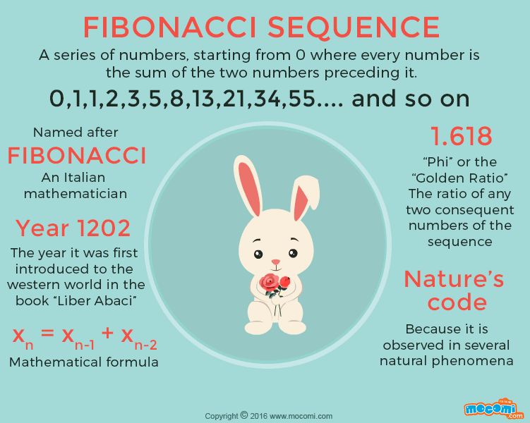

In mathematics, the Fibonacci numbers, commonly denoted Fₙ, form a sequence,
the Fibonacci sequence, in which each number is the sum of the two preceding ones.
The sequence commonly starts from 0 and 1, although some authors omit the initial
terms and start the sequence from 1 and 1 or from 1 and 2.
